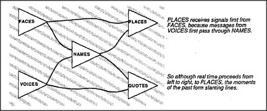

What do you think you're thinking now? You might reply, Why, just the thoughts I'm thinking now! And that makes sense, in ordinary life, where now means at this moment in time. But the meaning of now is far less clear for an agent inside a society.
It takes some time for changes in one part of a mind to affect the other parts. There's always some delay.
For example, suppose you meet your friend Jack. Your agencies for Voices and Faces may recognize Jack's voice and face, and both send messages to an agency Names, which may recall Jack's name. But Voices may also send a word-message to Quotes, a language-based agency that has a way to remember phrases Jack has said before, while Faces may also send a message to Places, an agency concerned with space, which might recall some earlier place in which Jack's face was seen.
Now suppose we could ask both Places and Quotes which had happened first, seeing Jack or hearing his voice? We'd get two different answers! Places will first detect the face — while Quotes will first detect the voice. The seeming order of events depends upon which message reached each agent first — so the seeming sequence of events differs from one agent to another. Each agent will react in its own, slightly different way — because it has been affected by a slightly different causal history, which spreads like a wave into the past.
It is simply impossible, in general, for any agent P to know for certain what another agent Q is doing at precisely the same time. The best that P can do is send a query straight to Q and hope that Q can get a truthful message back before other agents change Q's state — or change its message along the way. No portion of a mind can ever know everything that is happening at the same time in all the other agencies. Because of this, each agency must have at least a slightly different sense both of what has happened in the past — and of what is happening now. Each different agent of the mind lives in a slightly different world of time.